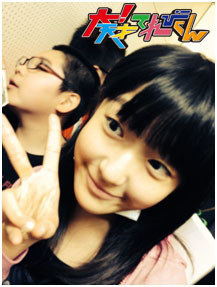

【冬イベントの思い出】山田陶子
★冬イベントの思い出★
陶子です(・o・)/
去年の夏のイベントは、カメムシ。
で、冬のイベントは、まさかのケンタウルス・・・(；一_一)
いいんですけどね・・・
なんか、オチがつく役ですな毎回。
でも、てれび戦士の中では、結構人気者でした。

※ズッサン？
皆さん、好奇心旺盛ですな。
入りたがってました？
ケンタウルスの下半身にヽ(^。^)ノ。
とにかく、楽しい稽古の日々でした。
毎日、沢山笑いました。
あと、「水晶庭園」歌いました。
美澪奈ちゃんと、毎日練習して頑張りました(T_T)。
微妙な音程のズレは、大目にみてくらさいm(__)m
★小説：「大！天才てれびくん」★
そういえば、私だけ、服の感じ違うよね・・・。
嫌だな・・・。

「大天才テレビジョン」の、女子社員たちを見回して、フッと思った・・・。
そんなに暗い？
いや、そう〜でもないはず。
結構、みんなで盛り上がるし、暴れたりもする。
運動神経は、悪くないはずだ。
走るのも速いほうだ。
まぁ・・・確かに、「はじける笑顔」ってのは、難しい(-_-;)
女子社員は、名前呼ばれると、キラキラ笑顔で返事する。
でも、それだってできないわけじゃない・・・。
でも、私の場合、気合が入らないとできない・・・。
そこ、あんまし意識したことないし・・・。
みんな、ずっと気合いれてんのか？
違うよな〜(-_-;)
とか、考えながら、休み時間、周りを見てみることにした・・・。
お〜！
美澪奈ちゃん！本日もキラッキラの瞳！
「・・・」
誰かがみーちゃんのこと呼んでるぞ。
「はぁ〜ぃ・・・・・・(-。-)」
あれ？
普通だ！休み時間だしね。
かなり集中してゲームしてたもんね。
気合入ってないよね〜♪そりゃそうだ♪
お〜！太陽のようなその笑顔！ニイナ。
「はい♪♪はい♪♪」
○○さんとお話ししてる。
相変わらず、いい返事だ〜♪
「ねぇねぇ、陶子、あの方どなた？」
あれ？そうだニイナさん天然でした・・・。
「はい！！はい！！」
廊下から聞こえてくるゆいちゃんの声！
ゆいちゃん大きな声でお返事！
今日も元気♪でお顔も綺麗！
あ！こっちに走ってきた。
「陶子〜(T_T)」
あ！泣いちゃった。そう、ゆいちゃん泣き虫さん。
「あ〜さみちゃん♪」
「あ〜♪陶子ちゃぁ〜ん♪(^○^)♪」
ピトってくっついてきて可愛い♪
テレタビーズに似てると、密かに思っていたりする。
実は人見知りで、超怖がり♪
「美晴ちゃん？」
「あ・・・陶子ちゃん・・・どないしたん？・・・」
ほんわか♪時間がゆっくり流れます(^_^;)
笑顔で萌さん、こっちに「手を振る」
「陶〜子〜♪(*^_^*)/~♪」
ゆる〜い呼び方・・・。
隣に座ってみる・・・。
別に、何ってない・・・。
この人、超マイペース。
可愛いのに、全力で笑いも取りに来る♪
可笑しい♪
なんか、楽しいぞ！
ん？
私、何、悩んでたんだっけ？
せっかくの、休み時間、また、ボーっと過ごしてしまった。
ま、いっか♪

投稿者:山田陶子 | 投稿時間:18時00分 | カテゴリ：We are 大天才テレビジョン | 固定リンク


 " title="ソーシャルブックマークについて">
" title="ソーシャルブックマークについて">
※NHKサイトを離れます。

{kind=link}